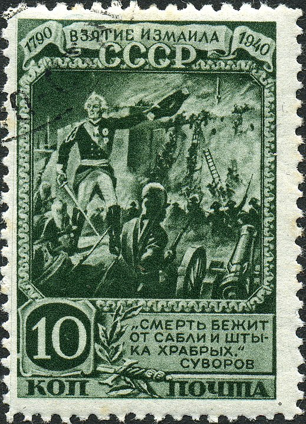
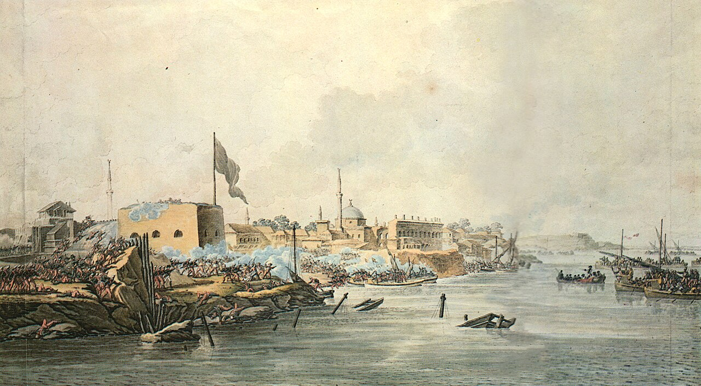
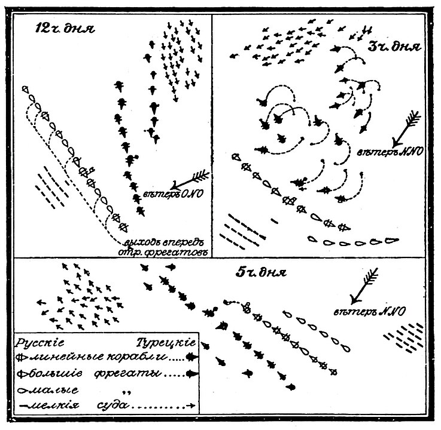
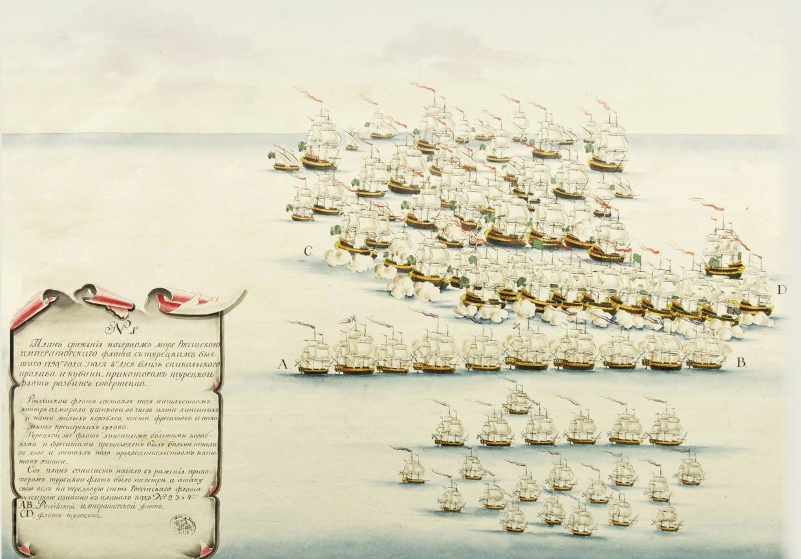
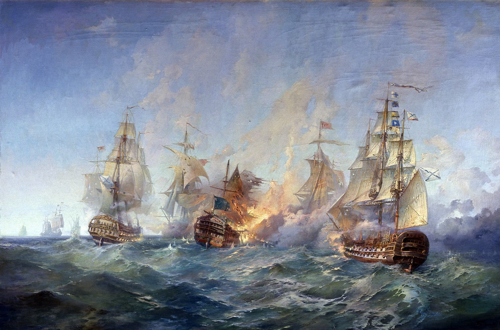
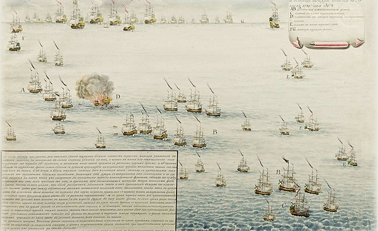
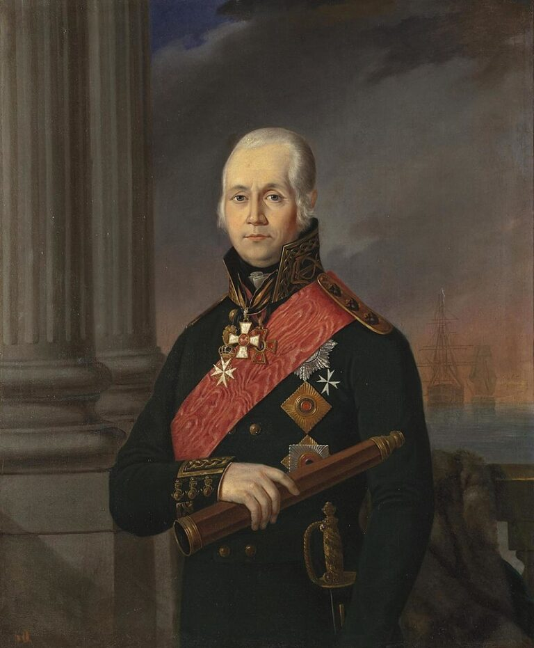

В декабре 1790 года русская армия под командованием Александра Суворова осадила турецкую крепость Измаил, считавшуюся неприступной. Крепость, расположенная на берегу Дуная, была укреплена мощными стенами, бастионами и рвами, а её гарнизон состоял из опытных турецких солдат. Суворов, понимая сложность задачи, провел тщательную подготовку к штурму, организовав интенсивную артиллерийскую подготовку и обучение солдат действиям в условиях штурма.


В декабре 1790 года русская армия под командованием Александра Суворова осадила турецкую крепость Измаил, считавшуюся неприступной. Крепость, расположенная на берегу Дуная, была укреплена мощными стенами, бастионами и рвами, а её гарнизон состоял из опытных турецких солдат. Суворов, понимая сложность задачи, провел тщательную подготовку к штурму, организовав интенсивную артиллерийскую подготовку и обучение солдат действиям в условиях штурма.


В конце августа 1790 года, после победы в Керченском сражении, русский флот под командованием адмирала Фёдора Ушакова продолжал контролировать Черное море. Турецкий флот, стремясь восстановить свое положение, собрал новую эскадру и выдвинулся в сторону Керченского пролива. Ушаков, узнав о приближении турецких сил, перехватил их у мыса Тендра, заняв выгодную позицию для предстоящего сражения. Обе стороны осознавали важность этой морской битвы для контроля над Черным морем.
8-9 сентября 1790 года у мыса Тендра произошло морское сражение. Ушаков, применив свою тактику энергичного маневрирования и массированного артиллерийского огня, атаковал турецкий флот. Русские моряки, демонстрируя высокий профессионализм и боевой дух, нанесли сокрушительное поражение турецкой эскадре. Турецкие корабли понесли тяжелые потери, а часть их была захвачена. Победа при мысе Тендра стала еще одним триумфом русского флота в этой войне и окончательно закрепила его господство на Черном море.


Политическая обстановка
В Европе усиливалось давление на Россию с целью остановить её продвижение в Османской империи. Это давление оказывали, в частности, Англия и Пруссия, опасавшиеся усиления русского влияния в регионе.
После ряда поражений Османская империя начала проявлять заинтересованность в мирных переговорах.
